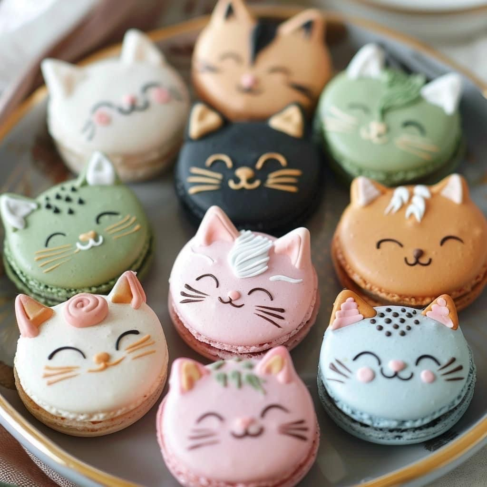
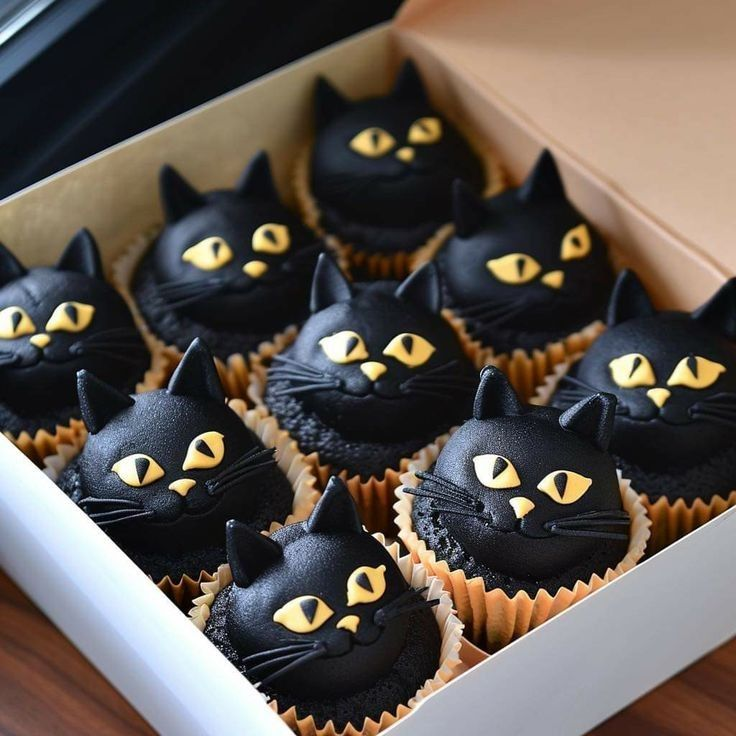
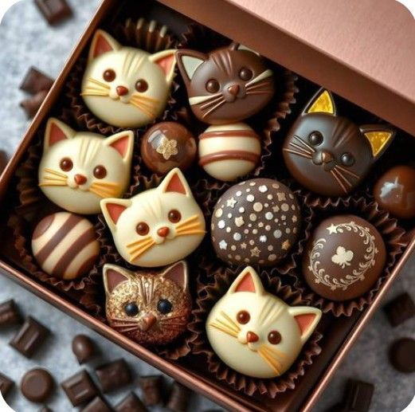
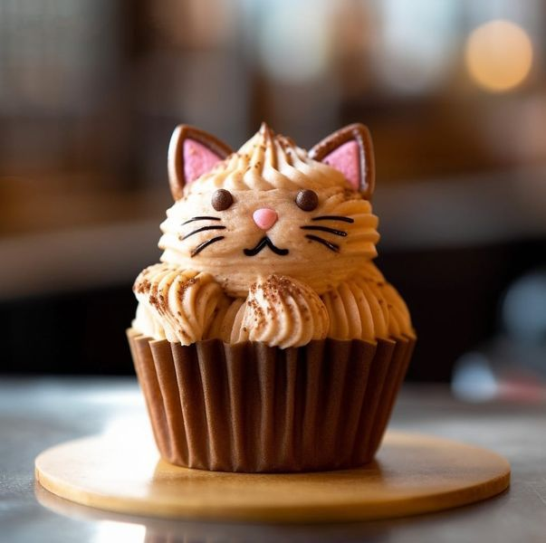
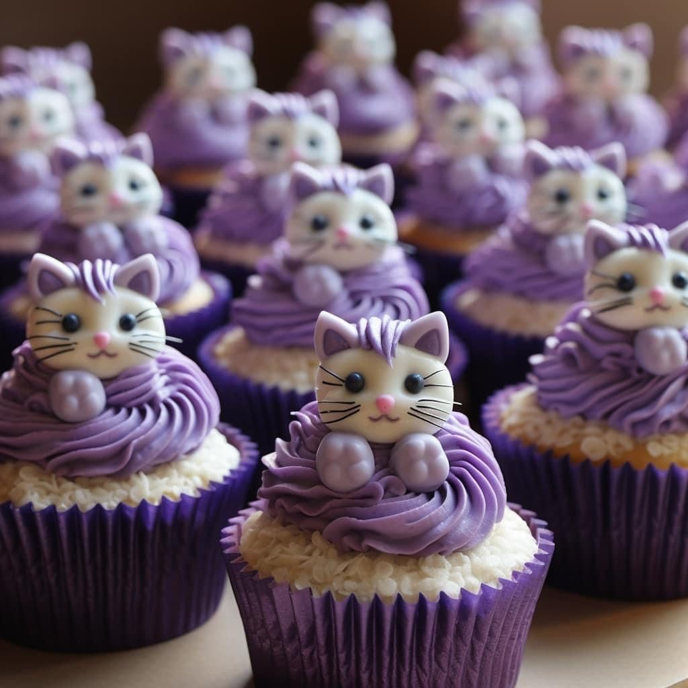
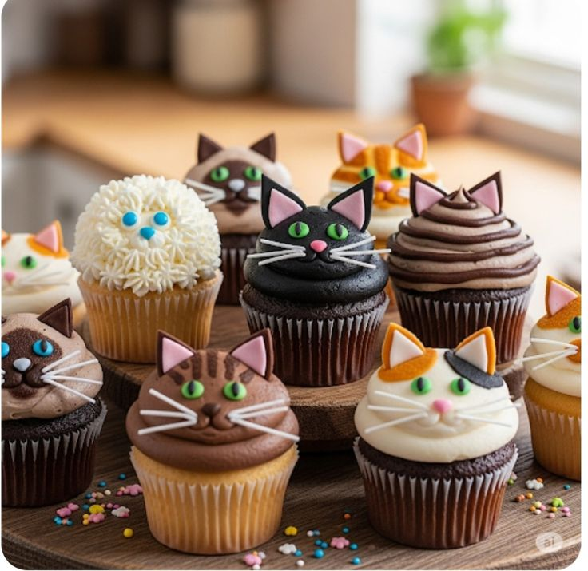
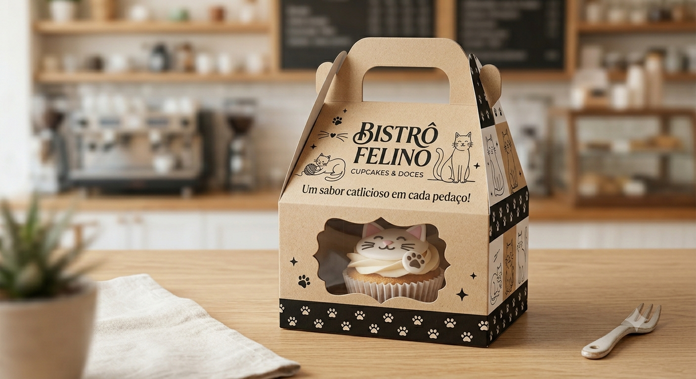
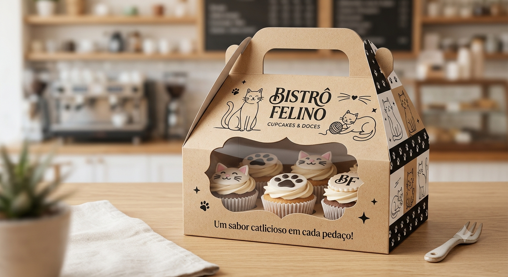
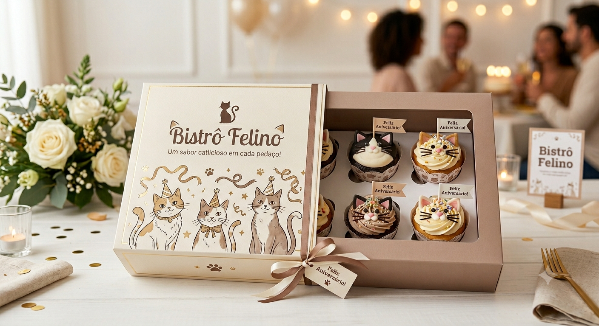

Nossos Cupcats

Cupcat Clássico
"Simples como um ronron, irresistível como um gatinho."
- Massa de baunilha
- Cobertura de chantilly
- Gatinho de fondant no topo
R$ 12,90

Cupcat de Chocolate
"Tão intenso quanto o olhar de um gato preto."
- Massa úmida de cacau
- Ganache de chocolate belga
- Decoração felina de açúcar
R$ 14,90

Cupcat Chocolate Branco e Preto
"Como um gatinho bicolor — dois mundos, uma só fofura."
- Massa de chocolate amargo
- Recheio de ganache de chocolate branco
- Cobertura mesclada preto e branco
- Orelhinhas bicolores de açúcar
R$ 16,90

Cupcat de Morango
"Doce e delicado, como um filhote de gato."
- Recheio de morango fresco
- Cobertura rosa
- Orelhinhas de gato
R$ 13,90

Cupcat Violeta
"Misterioso e elegante, como um gato lilás ao entardecer."
- Massa de mirtilo e lavanda
- Cobertura roxa de cream cheese
- Cristais de açúcar violeta
- Gatinho de fondant lilás
R$ 15,90

Cupcat Surpresa
"Assim como um gato, você nunca sabe o que vai encontrar dentro."
- Sabor sorteado a cada pedido
- Recheio surpresa escondido na massa
- Decoração temática exclusiva do dia
- Pode ser: Nutella, doce de leite, frutas ou caramelo
R$ 13,90
Embalagens por Encomenda

Caixinha Individual
Perfeita para presentear com carinho. Comporta 1 Cupcat e vem com laço e tag personalizada.
R$ 4,90

Caixa Felina — 4 unidades
Ideal para compartilhar. Estampa exclusiva de gatinhos com visor transparente para exibir os Cupcats.
R$ 12,90

Caixa Festa — 12 unidades
Para grandes momentos felinos. Caixa especial com divisórias, fita de cetim e cartão personalizado.
R$ 34,90
Encomendas Personalizadas
Quer surpreender alguém especial no aniversário? Fazemos caixas temáticas completamente personalizadas com o nome, as cores e o estilo que você escolher!
- Pedido com mínimo 3 dias de antecedência
- Mínimo de 6 unidades por encomenda
- Escolha cores, sabores e decoração
- Retirada no local ou entrega mediante consulta